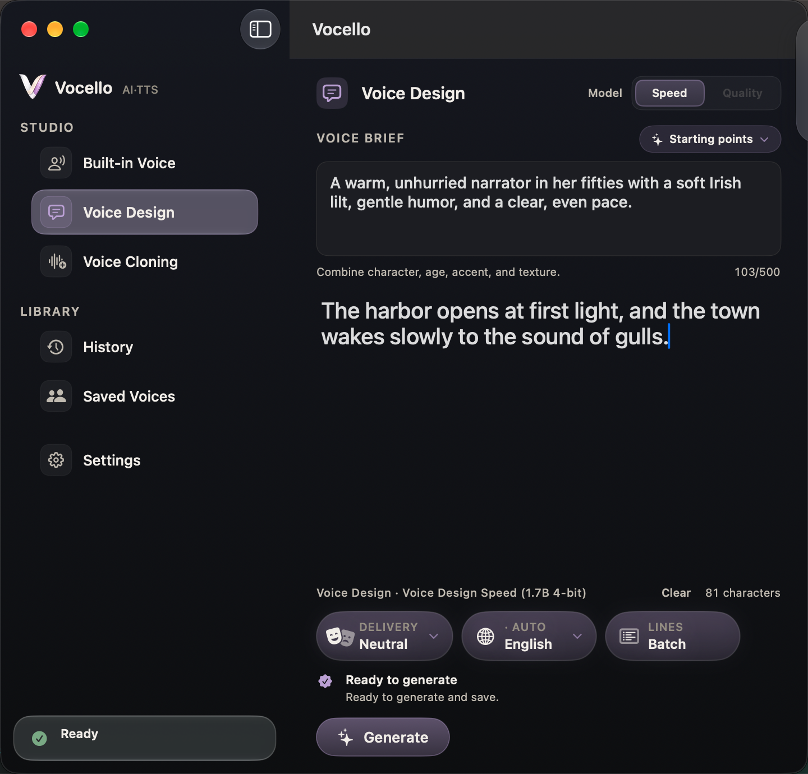
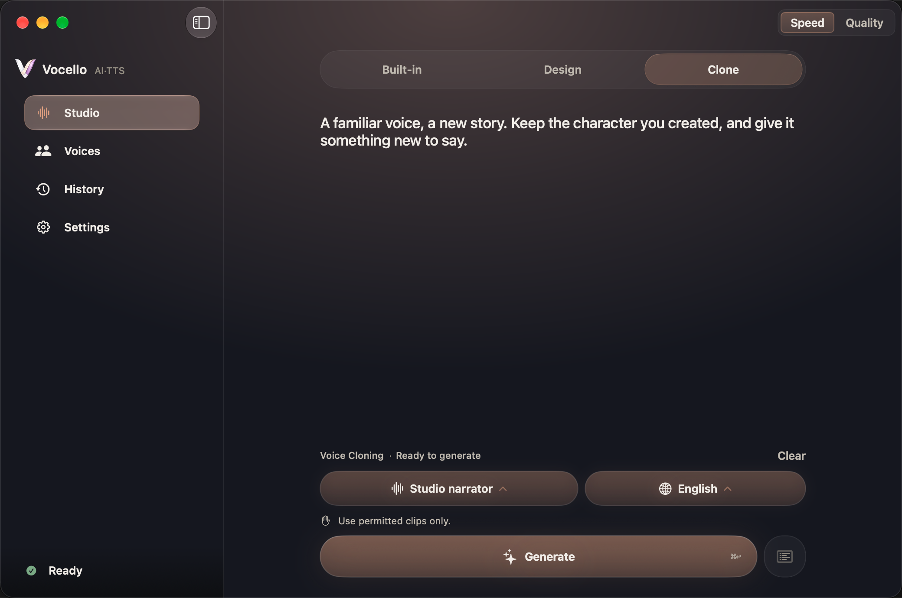

Built-in Voice
Nine speakers and ten languages, with the delivery you choose.

Voice Design
Describe a voice in your own words, then keep the ones you like.

Voice Cloning
A new voice from a short clip you have permission to use.
